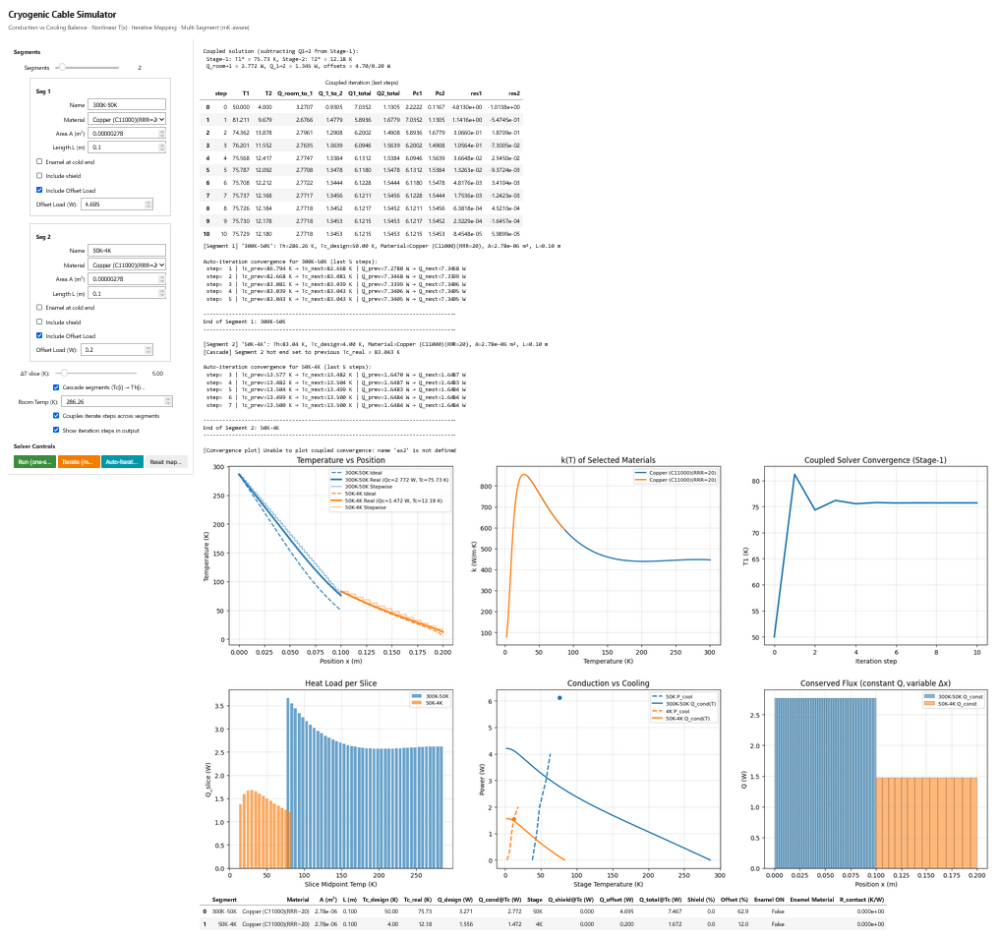
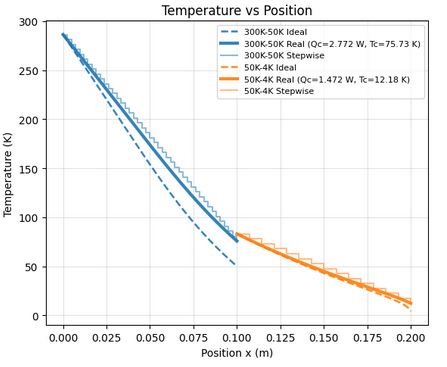
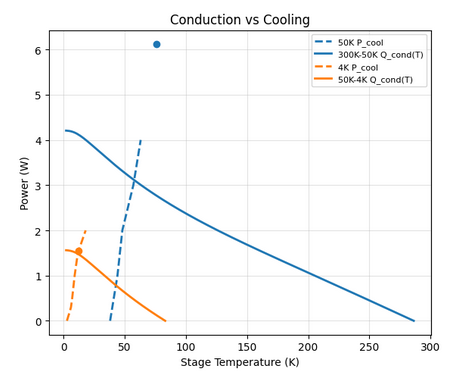

Engineering Problem
Cryogenic cable systems for quantum computing infrastructure span a wide temperature range -- from room temperature down to the millikelvin regime. Material thermal conductivity varies by several orders of magnitude across this range, making straightforward linear analysis unreliable. At the same time, the cryocooler cooling capacity is finite and temperature-dependent: if the conductive heat load through the cables exceeds what the cooler can extract at a given stage, the system runs away rather than reaching a stable operating point.
The task was to build a simulation framework that could find the actual equilibrium temperatures across a two-stage cryogenic architecture -- accounting for nonlinear material behaviour, realistic cooler curves, and cascaded thermal boundaries -- and flexible enough for systematic parameter studies across materials and cable counts.
System Architecture
The model represents a two-stage cryostat (Stage 1 ~50--75 K, Stage 2 ~4--12 K) with multi-segment cables connecting warm and cold ends. Each stage has its own cooling power curve and parasitic offset load. The solver finds the equilibrium temperatures where conductive heat load equals available cooling capacity at each stage.
Cryocooler curve
Cryocooler curve
The parametric sweep covered six materials (Copper RRR=20, OFHC Copper RRR=50, Beryllium Copper, 304 Stainless Steel, Fe-9Ni Nickel Steel, Kevlar 49) and six cable bundle sizes (N = 1, 5, 10, 20, 35, 50), producing 36 operating points per material with automatic runaway detection.
Methodology
Temperature-dependent conductivity k(T)
Each material uses a dedicated analytical model fitted to published cryogenic data. The dominant model is the NIST log-polynomial, where thermal conductivity is expressed as a polynomial in log10(T). Other models include the OFHC rational-function fit, the Kevlar error-function blend, and a power-law fallback. Model selection and coefficient lookup are driven entirely by the material table -- no model code changes when adding a new material.
# k(T) dispatcher -- selects model from material coefficient table def k_of_T(T, row): T = clamp_T(T) # enforce physical range [1 mK, 500 K] model = str(row['Model']).strip().lower() if model == "logpoly": # NIST log-polynomial -- most materials coeffs = [float(row[c]) for c in ['a','b','c','d','e','f','g','h','i'] if not pd.isna(row[c])] logT = np.log10(T) poly = sum(coeffs[j] * (logT ** j) for j in range(len(coeffs))) return 10 ** poly elif model == "ofhc": # NIST rational fit for OFHC copper a,b,c,d,e,f,g,h,i = [float(row[x]) for x in ['a','b','c','d','e','f','g','h','i']] num = a + c*T**0.5 + e*T + g*T**1.5 + i*T**2 den = 1 + b*T**0.5 + d*T + f*T**1.5 + h*T**2 return 10 ** (num / den) elif model == "kevlar": # error-function blend (low/high T regimes) a,b,c,d,e,f = [float(row[x]) for x in ['a','b','c','d','e','f']] logT = np.log10(T) blend = (1 - erf(2*(logT - c))) / 2 term1 = (a + b*logT) * blend term2 = (d + e*np.exp(-logT/f)) * (1 - blend) return 10 ** (term1 + term2)
k(T) model dispatcher. Coefficients are loaded from the material table; adding a new material requires no changes to model code.
Heat flow integration and equilibrium solver
Conductive heat flow between two cable ends is computed by numerical integration of k(T) over temperature. The equilibrium condition -- where conduction plus parasitic load equals the cooler's available capacity -- is solved with a bracketed Brent root-finding method. The two-stage solver applies this sequentially, using Stage 1 equilibrium temperature as the warm-end boundary for Stage 2.
# Conductive heat load Q = (A/L) * integral(k(T), T_cold, T_hot) def heat_flow(T_hot, T_cold, A_m2, L_m, row): if abs(T_hot - T_cold) < 1e-9: return 0.0 integral, _ = quad(lambda T: k_of_T(T, row), T_cold, T_hot, limit=200, epsabs=1e-6) return (A_m2 / L_m) * integral # Equilibrium: Q_conduction(T1) + Q_offset == Q_cooling(T1) # root_scalar (Brent) finds T1 where residual == 0 def residual_stage1(T1, ...): Q_cond = heat_flow(T_room, T1, A_eff, L, row) Q_cooler = get_cooling_power(stage1, T1) return Q_cond + Q_offset - Q_cooler T1_eq = root_scalar(residual_stage1, bracket=[T_lo, T_hi], method='brentq').root
Heat flow integration and equilibrium residual. A bracket failure indicates thermal runaway -- no stable operating point exists at that configuration.
Technical Stack
Key Outputs
- Nonlinear equilibrium temperatures (T1, T2) for 36 material/cable-count combinations across N = 1--50 cables and six conductor materials
- Automatic runaway detection: cases where conductive load exceeds available cooling capacity are flagged during the parametric sweep
- Conduction vs. cooling capacity comparison plots for assessing thermal margins at each cryostat stage
- Interactive Voila dashboard with live segment configuration, material selection, coupled solver controls, and real-time output plots
- Structured parametric sweep output (CSV) with pivot tables of T2 and Q2 across all material/N combinations, used directly in the thesis analysis
Simulation Output

Interactive Voila dashboard: segment configuration panel, temperature profiles, k(T) behaviour, solver convergence, and system-level heat flow output.

Nonlinear steady-state temperature profile across cable segments driven by temperature-dependent thermal conductivity. Profile shape varies significantly between materials.

Conductive heat load vs. available cryocooler capacity as a function of stage temperature. The intersection is the equilibrium operating point; no intersection indicates thermal runaway.